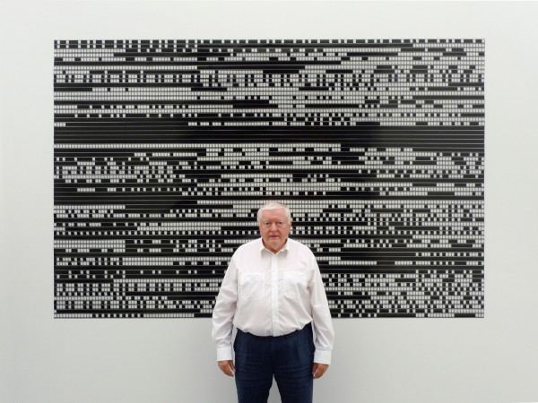
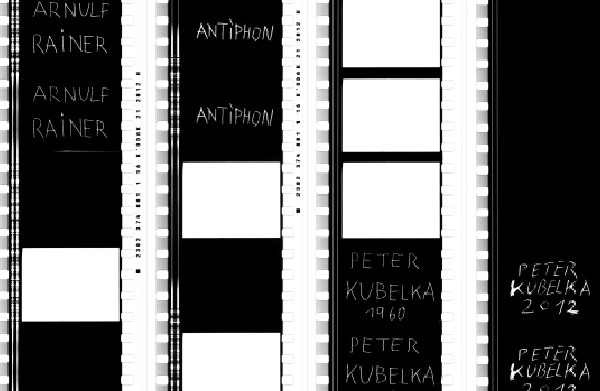

-
I Built Then My Ecstasy: On Peter Kubelka’s Cinema
by Michael Metzger May 3, 2013

Austrian avant-garde filmmaker and theorist Peter Kubelka likes to speak of the “now moment.”1 If you’re lucky enough to sit in on one of his legendary, inimitable lectures, you’re liable to see him illustrate these “now moments” with the ring of a Buddhist bell, or with a rhythm tapped out on a pair of Japanese woodblocks, as he chants contentedly his presentist mantra: “Now…now…now….” For Kubelka, it is the precise nature of the film medium to deliver twenty-four such “now moments” every second.Of course, each of these “now moments” conceals eons of protracted labor: Kubelka’s work is some of the most exactingly wrought in all of cinema. In a 1967 interview with Jonas Mekas, Kubelka mused that his output to that date amounted to fewer than eight frames per day.2 (Later, he would only get less prolific.) This methodical precision inarguably lends his “now moments” an intense charge: one characterizes the films of Peter Kubelka in terms of impact, in terms of density and an explosive force which persists unabated upon the second, third, and fourth viewing. Mekas celebrated “the incredible artistry of this man, his incredible patience,” describing 1966’s bracing, incomparable Unsere Afrikareise as “about the richest, most articulate, and most compressed film I have ever seen. I have seen it four times and I am going to see it many, many times more, and the more I see it, the more I see in it.”3 Stan Brakhage recognized that “Kubelka takes a very long time making each film a lasting experience of the moment of enjoyment—so that each can be seen again and again for increasing fulfillment of the initial experience.”4 Both Brakhage and Mekas thus encounter the pressure of accumulated time in Kubelka’s constructions, a potential energy that, like a clock wound to infinite tension, proleptically sustains an unlimited number of viewings.
Indeed, though Mekas found something crystalline and organic in their compressed imagery, Kubelka’s classic works from the fifties and sixties strike me as elegantly, delicately artificial; clockwork-like, reflecting Kubelka’s enthusiasm for the lost art of the handmade timepiece. It is perhaps the grotesque song of the cuckoo clock which resonates in Unsere Afrikareise. In a comprehensive new documentary, Martina Kudláček’s Fragments of Kubelka, the now 79-year-old filmmaker recounts an experience in Africa in which a group of drummers began to strike a rhythm precisely at the moment the setting sun hit the horizon, a prototypical instance of the audiovisual “sync event” so abundant in cinema. It is the production of such orchestrated “sync events” which makes Unsere Afrikareise tick. Hired to document this African hunting safari by a group of bourgeois Austrians, Kubelka radically subverted the footage and audio, condensing the material into hundreds of multi-layered sound-image correlations. Early in the film, the sound of a gunshot accompanies the image of a hat blown off in the wind, jolting the viewer like a wake-up call into active perception. This and other “sync events” betray the fact that animals aren’t the only targets in Kubelka’s lens. Despite the leering glimpses of “natives” and wild beasts, nothing in Unsere Afrikareise is more savage than its bleak irony. A cartoonish soundtrack, somewhere between concrète and Carl Stalling, scores images of felled beasts and fetishized black bodies; throughout, the alarming, brutish off-screen guffaws of the Austrian hunters serve as laugh track, implicating filmmaker and audience alike in a cruel, racist Looney Tune. It is this cuckoo laughter that serves as the film’s rhythmic element alerting the viewer to the complicity of hunter, filmmaker and spectator in the “now moment” of colonial oppression.
If a European cuckoo-clock rhythm of laughter inflects Unsere Afrikareise, the rhythms of his earlier “metric films” bring to mind the metronome and the stopwatch. Though the metric films lack the political and ethical complexity of Unsere Afrikareise, they also share an interest in testing the viewer’s perceptual limits. Kubelka conceives of 1956’s Adebar and 1958’s Schwechater as precise systems imposed on time’s endless continuum, rational schemes emerging from an immeasurable flux. Exactly a minute in length, these films function on principles of regularity, division, and repetition, a reminder of the debt the cinema projector owes to the chronometer, to the moment of industrialization when the clock started watching the worker as much as the worker watched the clock. These films are cinematic stopwatches, by which the viewer is submitted to a kind of “time trial:” as rapid, inscrutable clusters of high-contrast single frames flicker from between stretches of black leader, watching Schwechater feels like a perceptual-synaptic responsiveness test.
Arnulf Rainer and Antiphon (1960/2012) (Image courtesy of Lincoln Center)
In the history of experimental cinema, then, Kubelka stands as the first to make films that experiment on you. And no film better manifests this strand of the avant-garde than the first “flicker film,” 1960’s seminal Arnulf Rainer: to many acolytes of experimental cinema, it stands as a timeless revelation of the film medium’s “hard core;” to others, it represents nothing more than an endurance test. While it’s hard to imagine that a film as abrasive as Arnulf Rainer was not conceived as an assault (which, if it were true, would have made it an enormous success: it cleared the room at its premiere screening and cost the artist most of his friends),5 but I believe Kubelka when he claims, “my intention when making films is not a wish to entertain, but rather that of a scientist who does his research.”6 To apply the cliché of “clinical precision” here seems more than justified, since it so purely eliminates film’s stochastic variables, reducing cinema to its most fundamental components. At one key moment in Fragments, Kubelka describes the making of Arnulf Rainer with the characteristic concision we find in his films:
“The structure of my film is metric. It’s sixteen even parts. The elements are only the four basic elements of cinema: sound, silence, light, darkness. All the elements have the same length, namely a twenty-fourth of a second. And out of that simplest film language, I built then my ecstasy.”
It is worth pausing on each of these last three words. Among them, “ecstasy” appears at first the most suggestive. Arnulf Rainer remains a psychedelic experience both in spite of and because of its aspirations to science, reminding us of the moment when LSD was at once an object of serious medical study and a promising gateway to spiritual revelation. While formally ahead of its time, it is in this sense much of its moment, a moment before psychedelia left the clinic once and for all. The phantasmic geometries and spectral hues we encounter between Arnulf Rainer’s stroboscopic frames emerge not from the film itself but from mysterious subjective processes of ocular and psychological response. Like the ecstasy we read in the upturned eyes of Zurbaran’s Saint Francis (1640-1645), Kubelka’s ecstatic vision takes place not before the eye but rather behind it. Indeed, much like LSD, Rainer proved far more influential for its experiential impact than for its scientific rigor. Filmmakers like Tony Conrad and Paul Sharits built upon its flickering template not so much to define the basic parameters of cinematic form as to refine its phenomenological, psychedelic potential.7 Partly because of its underground popularity, critic Parker Tyler saw a “new experience of psychedelic time” in Rainer’s “chemical aesthetics,” fretting that the “hypnotic” qualities of Rainer’s “purely formal rhythms of sight and sound” had a cultish appeal: “Just as under certain drugs or perhaps actual hypnosis (we think of a snake fascinating a small animal), a human subject may find the greatest “aesthetic” reward in the simplest repetitive movement of some object or objects, provided the movement is rhythmic, so, exactly, may a viewer of Kubelka’s films decide, if sufficiently indoctrinated with the Brakhage-Mekas creed, that ‘Kubelka is the worlds greatest filmmaker’ (Brakhage).”8

Saint Francis (1640-1645)
Despite the reactionary attitude, there’s a kernel of truth in Tyler’s remarks: the sustained importance of and interest in Kubelka’s films and thought, so amply manifested by Fragments of Kubelka, can be attributed both to his brilliance, and to the crucial support he found in Brakhage and Mekas. In 1966, after a string of professional catastrophes, Kubelka received an invitation from the two to bring his work to America. While a guest of Stan Brakhage in Colorado, he put the finishing touches on Unsere Afrikareise; the film debuted in October of that year at the Film-Maker’s Cinematheque in New York on a program, organized and promoted by Mekas, which also included the earlier trio of “metric films.” As Kubelka recalls, the American trip was the first professional success of his cinematic career—we might say, his first “sync event” after spending fifteen years ahead of his time. Playing to an audience that included Robert Rauschenberg, Andy Warhol, Ken Jacobs, and others, Kubelka’s films found a willing (and paying) audience of interested equals, while the filmmaker himself was given the opportunity to share his idiosyncratic theories of cinema in a series of lectures which changed both Kubelka’s life and the course of American avant-garde cinema in the following decade.9
As a sudden surge in filmmakers and theorists interested in medium specificity and abstraction took up the challenge of this work, Kubelka could no longer call Rainer “my ecstasy:” it was no longer his alone. Witnessing his project carried forward by a new structuralist-materialist avant-garde, it was at precisely this moment that Kubelka himself backed away from cinema. Increasingly in demand as a lecturer, Kubelka began in 1967 what he calls a period of “despecialization,” seeking a larger vocabulary with which he could express his ideas. Whereas until then, Kubelka had focused intensely on the film frame as a compositional unit, he now sought a new way to “frame” film culturally, turning to the study of cooking, anthropology, and music to situate cinema within the larger field of human endeavor. Fragment of Kubelka admirably charts the course of this capacious erudition, a horizonless field of curiosity for which cinema steadfastly provides both an anchor and a rudder. In excerpts from lectures and spontaneous dialogues, Kubelka utilizes this expanded cultural vocabulary to eloquently illuminate the natural and organic inspirations behind works which to me always seemed so mechanical: the diurnal, night-and-day rhythms of Arnulf Rainer, the “structural image of fire and of a running brook” in Schwechater.10 Because the intervening decades have revealed how vastly the scope of his interest has extended beyond the film frame, and because he has steadfastly refused digital transfer of his film works, Fragments of Kubelka ultimately succeeds most in paying tribute to the post-’67 period of its subject’s life and thought. While his films surely exhibit a remarkable longevity, they appear in Kudláček’s narrative as moments, stations in a path. Kubelka’s cinema—that is, the cinema as he understands and reveals it, as an expression of the human will to comprehend and transform space and time—is timeless.
Which brings us, then, to “then.” Kubelka uses film as a way to understand time—as space, as Heraclitean flux—but not to understand the past. In their emphasis of the filmic over the profilmic, Kubelka’s films can only come alive in the moment of attentive spectatorship. But what does it mean when, as celluloid becomes another stone-age relic, the “filmic” becomes a metaphor rather than a material reality? What does it mean to recapitulate the past of a filmmaker who has always privileged nothing more than the “now moment?” It might be fair to attribute Kubelka’s inability to complete Denkmal für die Alte Welt (Monument to the Old World), a film he first planned to exhibit in 1977, to this adherence to the “now moment,” were it not for the fact that his most recent (and, by all accounts, final) cinematic effort bears the similarly memorializing title, Monument Film. Recapitulating and expanding the radical formalism of Arnulf Rainer after fifty years, Monument Film suggests both an act of personal recollection and an elegy for film itself. If Monument Film is the elegy, then Fragments of Kubelka (which, at four hours, is itself a kind of monument) stands as a more conventionally discursive eulogy.
So, is Kubelka winding back the clock, or is he winding it down altogether? In Monument Film’s last sequence, two projectors show Arnulf Rainer superimposed upon a new film, Antiphon, which inverts the original’s schematic arrangement of black frames, white frames, white noise and silence. The sequence appears as six and a half minutes of pure white light and white noise—thus containing all possible filmic images and sounds within—mitigated only by the inconsistencies of dual projector synchronization. Another “sync event,” to which we could add the simultaneous appearance of Fragments: both seem to sound the funeral drum as the sun sets on the age of cinema. This would be a cause for grave concern, were it not for the optimistic words of Kubelka himself:
“There is a new global avant-garde working exclusively with photographic film, there is a growing international lab movement backed by thousands of young film artists. The phoenix will rise from the ashes. I do not doubt that in the least.”11
So a bright light may be flickering somewhere in the future, after all. Which, in a way, puts Kubelka right back where he was in 1960 making Arnulf Rainer: still ahead of his time, looking at his watch, waiting for the world to catch up with him.
- If you haven’t been lucky enough to catch one (me neither), and you don’t live close enough to New York to catch the run of Martina Kudláček’s Fragments of Kubelka starting Friday at the Anthology Film Archives, there are a few online, such as this one, filmed at London’s Drawing Room gallery on June 16, 2012. [↩]
- Jonas Mekas, “Interview with Peter Kubelka,” in Film Culture Reader, ed. P. Adams Sitney (New York: Praeger, 1970), 296. [↩]
- Jonas Mekas, “On The Supreme Mastery of Peter Kubelka,” in Movie Journal: The Rise of a New American Cinema 1959-1971 (New York: Collier Books, 1972), 258-259. [↩]
- Stan Brakhage, “On Peter Kubelka,” in Film-Makers’ Cooperative Catalogue No. 4, 1967 (New York), 183. [↩]
- For an account of this screening, as well as similarly confrontational screenings that followed, see P. Adams Sitney, “Kubelka Concrete (Our Trip to Vienna)”, Film Culture no. 34, Fall 1964, generously scanned and posted at http://making-light-of-it.blogspot.de/2012/07/kubelka-concrete.html. [↩]
- Pamela Jahn, “Monument Film: Interview with Peter Kubelka,” Electric Sheep Magazine, April 3, 2013. Accessed April 25, 2103, http://www.electricsheepmagazine.co.uk/features/2013/04/04/monument-film-interview-with-peter-kubelka/ [↩]
- “The film-makers who followed Kubelka in exploring the possibilities of the flicker film in either color or black-and-white have tended to conceive it differently. For Kubelka, Arnulf Rainer is the absolute film, the alpha and omega, which both defines and brackets the art. For the structural film-makers who use the flicker form, it is the vehicle for the attainment of subtle distinctions of cinematic stasis in the midst of extreme speed which can be presented so as to generate both psychological and apperceptive reactions in its spectators. Although Kubelka is not closing out the possibility of such reactions, he created his film as both a definition of cinema and a generator of rhythmical ecstasy.” Sitney,Visionary Film: The American Avant-Garde, 1943–2000, 3rd ed. (Oxford: Oxford University Press, 2002), 288. [↩]
- Parker Tyler, Underground Film: A Critical History, (London: Penguin, 1971), 61-62. [↩]
- Kubelka describes the trip and its importance to his career in an interview with Scott Macdonald, “Peter Kubelka: On Unsere Afrikareise (Our Trip to Africa)” A Critical Cinema 4: Interviews with Independent Filmmakers (Berkeley: University of California Press, 2005), 177-178. [↩]
- Sitney, Visionary Film, 287. [↩]
- Peter Kubelka, quoted in Stefan Grissemann, “Frame By Frame: Peter Kubelka,”Film Comment, Sep/Oct2012, Vol. 48 Issue 5, 75. Accessed online April 25, 2013, http://filmcomment.com/article/peter-kubelka-frame-by-frame-antiphon-adebar-arnulf-rainer [↩]